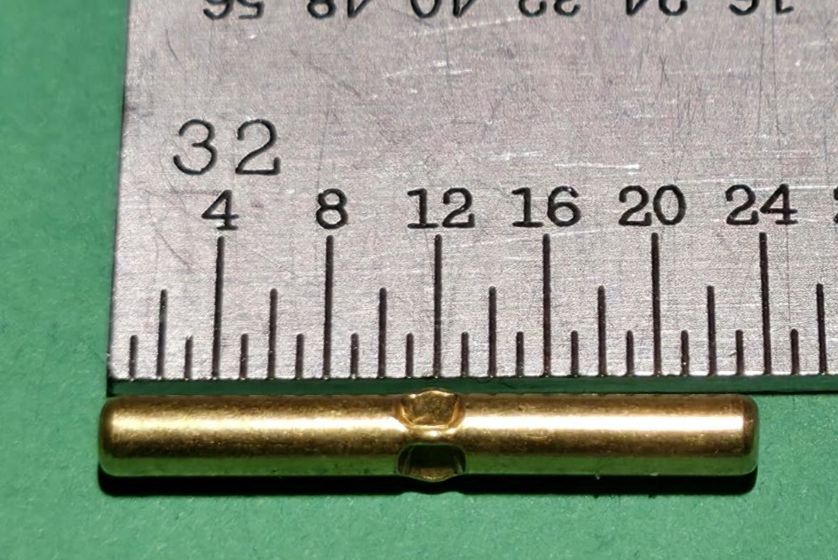
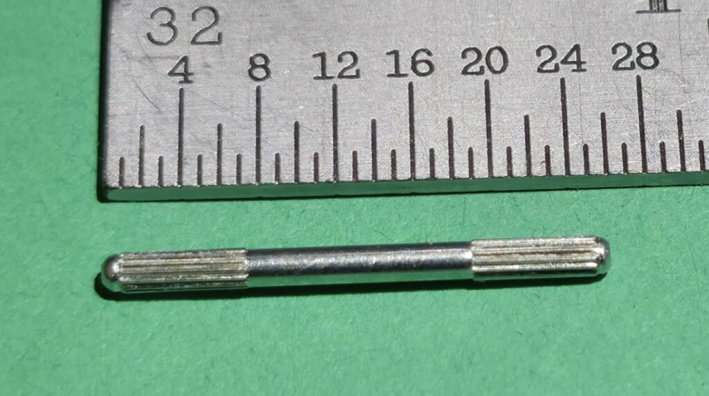

In-house custom tool and die creation for the automatic die rolling process. Progressive dies shape raw material as it rolls through, making metal flow into the specified shape without cutting.
After DFM design refinement, Electropin's experts create the custom tools and dies needed to cold-form your connector pins to exact specifications. Progressive dies are developed for the automatic die rolling process. As raw material rolls through the die, it is shaped by flow rather than removal -- no material is ever cut away.
Trusted by manufacturers across industries for precision tooling and die creation.
"Electropin's zero-waste process saved us 30% on material costs while delivering pins that exceed our quality standards. Their DFM team identified design improvements we hadn't considered."
"We've produced over 50 million pins with Electropin and haven't had a single quality issue. Their defect rate claims aren't marketing -- they're real."
"From first consultation to first delivery in under three weeks. Electropin's turnaround time is unmatched in the industry."
Common questions about our custom die creation process.
Custom die creation is part of our two-week first-batch timeline. Die engineering begins immediately after DFM design approval, and the progressive die set is completed and validated before the first production run.
We create progressive cold-forming dies specifically designed for the automatic die rolling process. These dies shape raw material through a series of stations, forming the pin geometry and retention features without any cutting or material removal.
Yes. Submit your existing pin specifications or drawings and our DFM team will assess whether cold-forming is feasible. If so, we'll engineer a progressive die set to match your exact dimensional and functional requirements.
Our progressive dies are built for high-volume, long-term production. They are engineered from durable tool steels and regularly maintained to ensure consistent output across millions of pins. Die life varies by geometry and material but typically supports extensive production runs.
Minor design modifications can often be accommodated with die adjustments. For significant changes, we'll work with you through the DFM process to engineer a new die set. Our collaborative approach ensures we minimize cost and lead time for any design revisions.
Tell us about your die creation requirements and our engineering team will provide a detailed quote within 24 hours.


Get in touch with our team to discuss your custom die creation requirements.